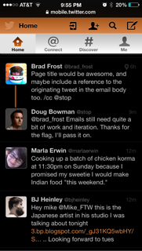
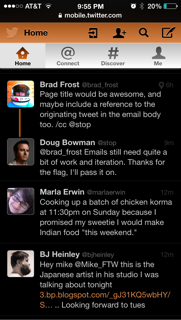

Abstract
IndieUI: User Context defines a set of preferences that users can choose to expose to web applications, and an API for user agents to access the preferences and listen for changes. Users can set preferences for features such as screen and font size, color, and typographical preferences. Users with disabilities can provide information about assistive technologies in use, indicate that the display is in an accessibility mode, and indicate whether and what kind of subtitles and audio descriptions they need. Web applications can use this information to optimize the presentation without a requirement to target a specific device, operating system, or locale. While customizations based on these properties benefit users, the information could also be used to make assumptions about users or compromise anonymity. Therefore, the specification includes user agent requirements to allow users to opt out and choose not to expose information on a category basis to preserve privacy.
See the introduction for background and usage examples. Also see the IndieUI Overview.
2. Extension to the Window Interface
Need to note why we could not use the standard addEventListener here. It would have either required a new event for every key (onUserFontSizeChanged, etc) or it would have not allowed authors to scope the preferences they were interested in (onUserSettingChange), and therefore prompted excessive callbacks, user prompts, etc.
Description TBD (esp re: privacy and fingerprinting, and prompt access for certain parameters on a per-domain basis, similar to location sharing).
Note
The UserSetting interface extends the Window object rather than the Navigator object because return values can be unique to each window. For example, a user might share a particular setting with only a few trusted domains.
partial interface Window {
DOMstring? userSetting (DOMString key);
void addUserSettingListener (DOMString key, UserSettingListener callback);
void removeUserSettingListener (DOMString key, UserSettingListener callback);
};2.1 Methods
addUserSettingListener-
Return type: void
removeUserSettingListener-
Return type: void
userSetting-
Example 1
// example of settings keys defined within the IndieUI User Context specification.
window.userSetting('user-font-size'); // returns computed value in CSS pixels, e.g. '16px'
window.userSetting('subtitles'); // e.g. returns 'display' if the user wants to see subtitles/captions; otherwise returns 'none'
// example of taxonomy- or vendor-prefixed settings proposals, intended for standardization.
window.userSetting('-webkit-foo');
window.userSetting('-moz-foo');| Parameter | Type | Nullable | Optional | Description |
|---|
| key | DOMString | ✘ | ✘ | Identifying key for the preference value to be returned. User Agents MAY support prefixed keys for vendor-proposed or implementation-specific settings, or another external taxonomy. |
Return type: DOMstring, nullable
Note
Standard vendor prefixes (ie, moz, o, webkit) are reserved. Any additional implementation, host language, or external taxonomy identifiers may be defined in a supplemental working group document.
3. UserSettingListener Callback Interface
callback interface UserSettingListener {
void handleUserSettingChanged (DOMString key);
};3.1 Methods
handleUserSettingChanged-
| Parameter | Type | Nullable | Optional | Description |
|---|
| key | DOMString | ✘ | ✘ | Key name for the requested user setting. E.g. 'user-font-size' or 'subtitles' |
Return type: void
4. Privacy Model
Todo: Further explain how the privacy model works: when user prompted, window.userSetting() or window.matchMedia() return the default value or null immediately, and only provide the updated match ansynchronously through handleUserSettingChanged() and matchMedia().addEventListener, or on subsequent requests to matchMedia().matches (e.g. on page reload) so there is never any detectable difference between "No" and "You don't need to know." A restricted @media block never prompts unless both the @media block and an included selector matches.
Todo: Document the way justification string may be defined by a meta element in the document head, such as:
<meta name="userMediaSettings" content="Used to enable captions and display them in your preferred font size and color.">
4.1 Restriction Categories
enum RestrictionCategory {
"none",
"userColors",
"userFonts",
"userMediaSettings",
"userScreenReaderSettings"
};| Enumeration description |
|---|
none | No category defined (default value). |
userColors | User settings related to color preferences. No default restriction. |
userFonts | User settings related to type and font preferences. No default restriction. |
userMediaSettings | User settings related to media alternatives such as captions/subtitles, audio description, etc. Default suggested restriction is to prompt the user for permission. |
userScreenReaderSettings | User settings related to screen readers. Default restriction is to prompt the user with a justification provided by the requesting web site author. |
4.3 User Agent Requirements for Restricted User Setting
To avoid privacy concerns, User Agents MUST immediately return the default value for any restricted features that will result in a user prompt. If and when the user chooses to share settings from the relevant category with the requesting page, the web page author can handle a user setting change callback, or make a subsequent request to the userSetting() method of the Window object.
- If the user has previously allowed access for this site to access the requested settings, or if the user has allowed all sites to access requested settings without restriction, the User Agent MUST return the correct value.
- If the user has a general 'prompt' restriction enabled for the requested setting, the User Agent MUST return the default, incorrect value, and the user agent SHOULD prompt the user with a generic dialog similar to that for location sharing.
- If the user requires a 'prompt with justification' restriction for the requested settings, the User Agent MUST return the default, incorrect value, and the user agent SHOULD prompt the user with a dialog that includes the author-provided justification string. If no author-provided justification string is defined, User Agents MUST NOT prompt the user, and MUST return the default, incorrect value for any subsequent requests.
- If the user has disallowed access for this setting to the site or all sites, the User Agent MUST always return the default, incorrect value.
5. Settings Keys and Related Media Feature counterparts
This section defines feature keys for user settings for use with the UserSetting interface. Some keys can also be accessed as Media Features using syntax defined in the CSS Media Queries specification. User Agents SHOULD implement an access control mechanism that allows users to restrict access to senesitive information requested via the userSetting() method and matchMedia() method of the Window interface, or from the @media selector in CSS. Todo: link these the the relevant portions of the access control extension.
The features are grouped by restriction categories (e.g. type settings, media settings, etc.) that define related media features and recommended default restriction levels.
Need a setting for whether full keyboard access is enabled (e.g. related to Safari "focus all controls" setting, or any touch screen device without a keyboard or Tab-like capability)
5.1 User Color Settings
- Restriction Category (IDL)
- userColors
- Suggested User Agent Restriction
- none
Note
Color settings are not be restricted by default from the requesting page, primarily because a site can figure out most of this information using some creative CSS and JavaScript. These keys are therefore primarily intended as convenience accessors so that web authors can more easily provide adaptive interfaces that work well for all users. The display inversion feature is not currently detectable, but does not represent a major concern for privacy or fingerprinting since it is unlikely that most individuals will have this setting enabled all the time.
5.1.1 Key: user-color
- Has Associated Media Feature
- Yes
- Returns
- String values matching the associated media feature values.
- Restriction Category (IDL)
- userColors
5.1.2 Key: user-background-color
- Has Associated Media Feature
- Yes
- Returns
- String values matching the associated media feature values.
- Restriction Category (IDL)
- userColors
5.1.3 Key: inverted-colors
Web authors SHOULD NOT re-invert foreground and background colors based on this setting, but MAY choose to double-invert some content, such as photographs.
- Has Associated Media Feature
- Yes
- Returns
- Boolean indicating whether the display colors are currently inverted by the operating system or user agent.
- Restriction Category (IDL)
- userColors
5.1.4 Key: user-contrast
- Has Associated Media Feature
- Yes
- Returns
- Floating point number value between -1.0 and 1.0, representing the software contrast setting of the user's operating system. A value of 0.0 represents no contrast modification to the display (normal), and 1.0 represents the highest possible contrast modification (could be used to Microsoft's "high contrast" mode). A negative number (uncommon) represents a lower-than-average contrast. User Agents SHOULD NOT use a positive value to represent hardware display contrast, as this value is reserved for assistive contrast modes. User Agents MAY use a negative value to represent lower-than-average contrast in a hardware display.
- Restriction Category (IDL)
- userColors
5.1.5 Key: monochrome
- Has Associated Media Feature
- Yes
- Returns
- Integer representing number of bits per pixel in a monochrome frame buffer. If the device is not a monochrome device, the output device value will be 0.
- Restriction Category (IDL)
- userColors
5.2 User Type/Font Settings
- Restriction Category (IDL)
- userFonts
- Suggested User Agent Restriction
- none
Note
Type settings are not restricted by default from the requesting page, because a site can figure out all of this information by creatively using CSS and JavaScript. These keys are therefore primarily intended as convenience accessors so that web authors can more easily provide adaptive interfaces that work well for all users.
5.2.1 Key: user-font-size
- Has Associated Media Feature
- Yes
- Returns
- Number representing the user's current default font size of root element, prior to applying page styles. User Agents MUST return the value translated to CSS pixels, e.g. 14, not '14px' or '1.4em'
- Restriction Category (IDL)
- userFonts
5.2.2 Key: user-minimum-font-size
- Has Associated Media Feature
- Yes
- Returns
- Number representing the user's minimum allowed font size. User Agents MUST return the value translated to CSS pixels, e.g. 9, not '9px' or '0.9em'
- Restriction Category (IDL)
- userFonts
5.2.3 Key: user-line-height
- Has Associated Media Feature
- No
- Returns
- Number as a unitless multiplier; equivalent to unitless 'Number' value for CSS 'line-height' property. e.g. 1.2, not '1.2em' or '12px'
- Restriction Category (IDL)
- userFonts
5.2.4 Key: user-letter-spacing
- Has Associated Media Feature
- No
- Returns
- Unit TBD; this should probably also be a calculated CSS pixel value equivalent to default or user value for CSS 'letter-spacing' property.
- Restriction Category (IDL)
- userFonts
5.2.5 Key: user-word-spacing
- Has Associated Media Feature
- No
- Returns
- Unit TBD; this should probably also be a calculated CSS pixel value equivalent to default or user value for CSS 'word-spacing' property.
- Restriction Category (IDL)
- userFonts
Note
In addition to font-size, which is commonly adjusted by mainstream users, line-height, letter-spacing, and word-spacing can be especially important for users with cognitive impairments such as dyslexia and ASD, so it's important to respect a user's default settings.
5.4 Screen Reader Settings
- Restriction Category (IDL)
- userScreenReaderSettings
- Suggested User Agent Restriction
- prompt with author-provided justification
User Agents MUST NOT implement high security features like screenreader settings until the user privacy model is implemented. User Agents MUST allow users to control sharing of prompted settings on a per-domain basis.
Web authors SHOULD NOT request any keys in this category unless the knowledge is essential to the operation of the web application, and web authors MUST provide a justification for the request as defined in @@ section.
Editorial Note on User Privacy
Due to community feedback related to privacy, this feature may be marked as at-risk or removed. The working group acknowledges its usefulness in complex web applications such as enterprise document-editing suites, but also acknowledges the fact that its utility may be easily misunderstood or potentially misused.
For example, the typing echo or other verbosity settings would be useful today, for sites such as Google Docs and iWork for iCloud. These applications use custom display views that are not able to be made accessible through conventional means, so speech output is controlled via live region announcements. The web application does not otherwise have access to user settings such as typing echo, so without access to this feature, the web application could not mimic the user's preferred output.
One potential misuse is for user metrics or tracking. Even with the best of intentions, this is a potentially harmful misuse of the API. There are currently very strict user privacy model requirements to implement this feature in a reasonably safe and secure way, but if the working group is not comfortable in the implementation's ability to sufficiently prevent this type of misuse, we will remove the feature.
5.4.1 Key: screenreader
Returns whether a screen reader is currently active or not (none).
- Has Associated Media Feature
- Yes
- Returns
- Token value indicating whether or not a screen reader is currently active or in use (
active), or none otherwise.
- Restriction Category (IDL)
- userScreenReaderSettings
5.4.2 Key: screenreader-typing-echo
Returns a value indicating whether typing in text fields causes a screen reader echos whole words, characters, both, or none.
- Has Associated Media Feature
- No
- Returns
words | characters | both | [none]- Restriction Category (IDL)
- userScreenReaderSettings
Todo: Probably need additional categories for screen magnifiers (active/none, scale factor), switch control software (active/none), and the more general "api-compatible" key which could be used for automation scripts in addition to real assistive technology.
A. Settings Keys List (alphabetical)
- 2014-09-24: Changed colors-inverted to inverted-colors to match its adoption into CSS4.
D. Acknowledgements
D.1 Active IndieUI Members
At the time of publishing, the following individuals were active, participating members of the IndieUI Working Group.
- Michael Cooper, Staff Contact, W3C Staff
- James Craig, Apple Inc.
- Katie Haritos-Shea, Invited Expert
- Andy Heath, Invited Expert
- Takeshi Kurosawa, Mitsue-Links Co., Ltd.
- Dominic Mazzoni, Google, Inc.
- Edward O'Connor, Apple Inc.
- Janina Sajka, Chair, Invited Expert
- Joseph Scheuhammer, Invited Expert
- Richard Schwerdtfeger, IBM Corporation
- Jason White, Invited Expert
D.2 Contributors
The following individual(s) were previously active members of the working group or otherwise significant contributors.
Tab Atkins, Jesse Bunch, Chris Fleizach, Lachlan Hunt, Bradley Meck, Sangwhan Moon, Ryosuke Niwa, Rich Simpson.
D.3 Enabling funders
This publication has been funded in part with Federal funds from the U.S. Department of Education, National Institute on Disability, Independent Living, and Rehabilitation Research (NIDILRR) under contract number ED-OSE-10-C-0067. The content of this publication does not necessarily reflect the views or policies of the U.S. Department of Education, nor does mention of trade names, commercial products, or organizations imply endorsement by the U.S. Government.
 
